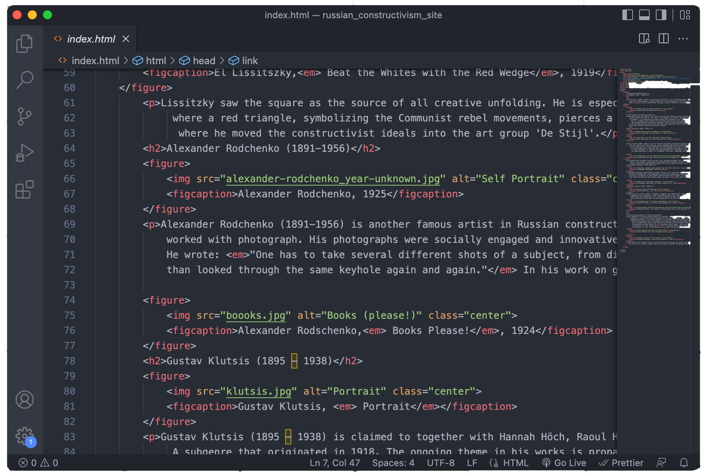
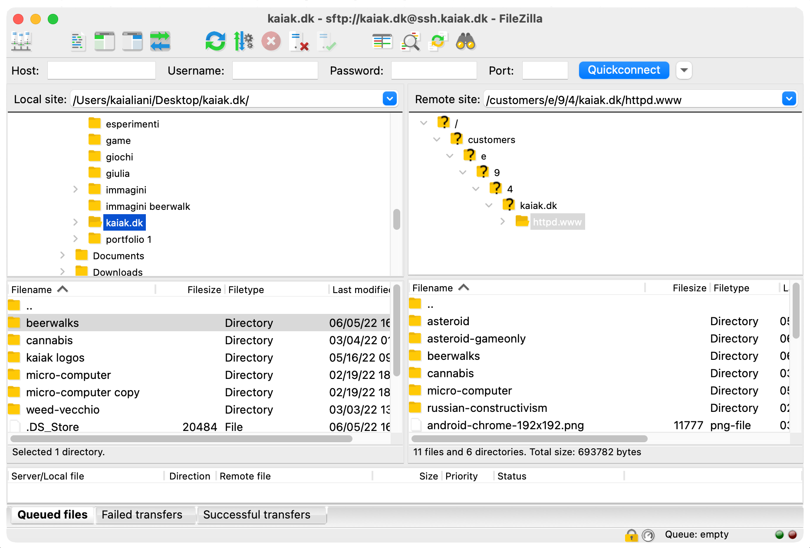

Russian Constructivism


The focus of this assignment was to use Visual Studio Code and build a webpage through HTML5 and CSS3. I mainly used <p>, <h1>, <h2> and <img> markup, and tweaked some of these elements with basic CSS properties like text-align, background-color, and font-size. I also relied on Gestalt’s Laws, such as the law of proximity, law of similarity and law of common region.

